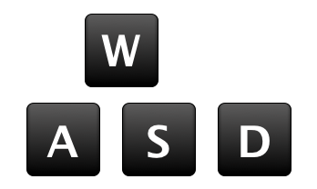
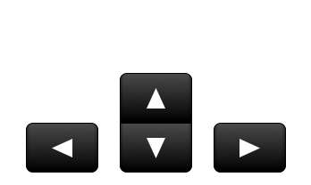

Paintball Pro is a top-down cooperative shooter inspired by the real-world game Paintball. There are both single player (4v4 with AI) and multiplayer (4v4 with real players/AI) versions of the game, with two different game types - Team Match and Capture the Flag.
To play, select either single player or multiplayer from the main menu (you'll be prompted to choose a username, and either type an IP address or search LAN for a server for multiplayer games), and then choose a game type to start a game.
In Team Match, players are separated into two teams - red and blue - and teams shoot players on the opposing team to earn points for their own team. At the end of the 3-minute game, the team with the highest overall score win.
In Capture the Flag, players are separated into the Red and Blue teams, in which players attempt to take control of a flag - returning it to their spawn base to earn points for their team. The team with the highest number of points at the end of the 3-minute game win.
There are two types of controls available, WASD and arrow keys, and both can be used during games:
 